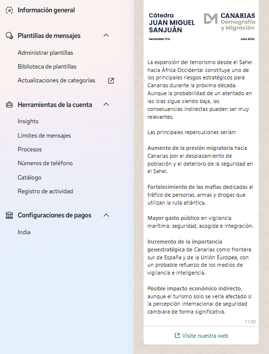
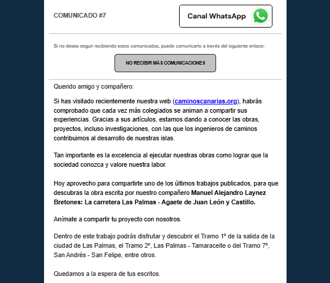
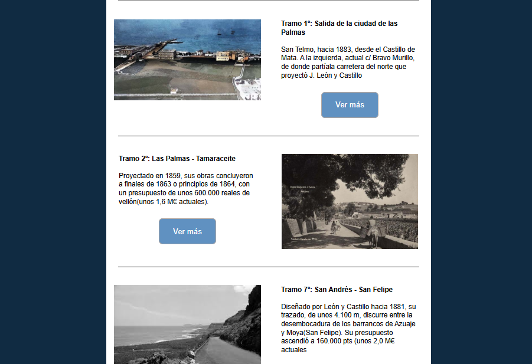
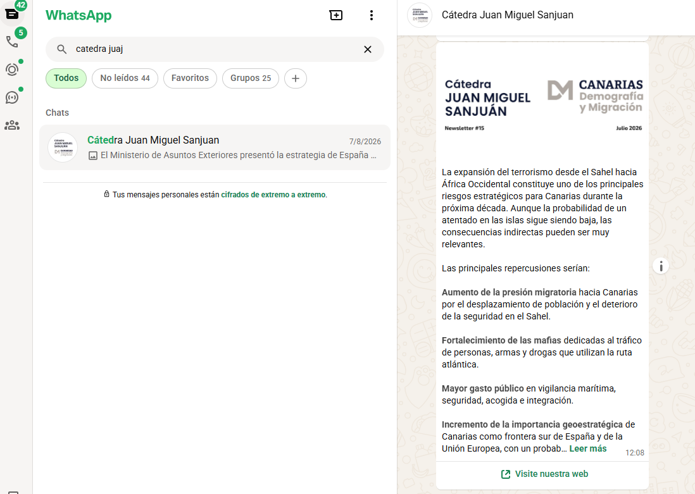

Miguel
Sánchez Godoy
— Especialista en Marketing Digital & Desarrollo Web, enfocado en SEO/GEO, E-commerce y estrategias masivas multicanal orientadas a resultados.

Sobre mí
Antes de continuar mis estudios en el extranjero, realicé mis prácticas profesionales en Empiresystems y Enova Studios, donde desempeñé diversas funciones relacionadas con el marketing digital y el desarrollo web. Entre mis principales responsabilidades se incluyeron la gestión de redes sociales, la creación y mantenimiento de páginas web, la detección y corrección de errores en sitios existentes, la optimización SEO y SEM, el análisis de palabras clave y la promoción del programa Kit Digital para empresas. Estas experiencias me permitieron aplicar mis conocimientos en entornos reales, fortalecer mis competencias técnicas y desarrollar una visión estratégica del marketing online.
Mi interés y dedicación me llevaron posteriormente a dar un paso más y viajar a Inglaterra para continuar mis estudios y vivir una experiencia internacional. Allí no solo adquirí nuevos conocimientos académicos, sino también una visión más amplia del marketing global. Aprendí a adaptarme a diferentes contextos culturales y reforcé habilidades como la comunicación y el trabajo en equipo en entornos diversos.
Tras mi etapa en Inglaterra, me incorporé al equipo de marketing de Satocan, donde perfeccioné mis competencias en desarrollo web mediante diversas tecnologías y herramientas como WordPress o Lovable. Asimismo, fortalecí mis habilidades en email marketing y comunicación masiva multicanal (Mailchimp y WhatsApp Marketing), la gestión estratégica de redes sociales para una gran compañía, el uso avanzado de hojas de cálculo (Excel), diseño con Canva e integración de herramientas de Inteligencia Artificial en los procesos diarios.
Técnico Superior en Marketing y Publicidad
ICSE (2022 - 2024)Graduado en Marketing (BA Hons)
York St John University (2024 - 2025)Habilidades & Aptitudes
HABILIDADES
- Creatividad
- Iniciativa
- Empatía
- Autocrítica
- Resolución de problemas
- Compromiso
- Trabajo en equipo
IDIOMAS
- Inglés
- Español
DIGITAL SKILLS
-
Excel
-
Word
-
Canva
-
Powerpoint
-
Creación web
Proyectos Destacados
Grupo Tambara
Desarrollo web empresarial enfocado en la presentación corporativa y optimización de marca.
Caminos Canarias
Plataforma e institucional orientada al sector de la ingeniería e infraestructuras regionales.
Cátedra Juan Miguel Sanjuán
Sitio web académico e institucional enfocado en la divulgación y gestión de contenidos.
Email & WhatsApp Marketing (Avanzado)
Uso a la perfección ambas herramientas tanto a nivel técnico como estratégico. Domino la configuración e integración directa a través de la WhatsApp Cloud API (gestión de plantillas de mensajes, catálogo y configuración de cuenta) así como campañas masivas automatizadas y newsletters mediante Mailchimp.

WhatsApp Cloud API
Administración de plantillas de mensajes, catálogos y límites de envío en la plataforma oficial.

Mailchimp - Newsletter
Diseño de maquetación HTML responsiva para divulgación de artículos y tramos históricos.

Mailchimp - Comunicados
Estructuración de comunicados masivos con integraciones a canales directos y política de bajas.

WhatsApp - Entregabilidad Chat
Resultado final recibido por los usuarios con llamadas a la acción directas hacia la web.